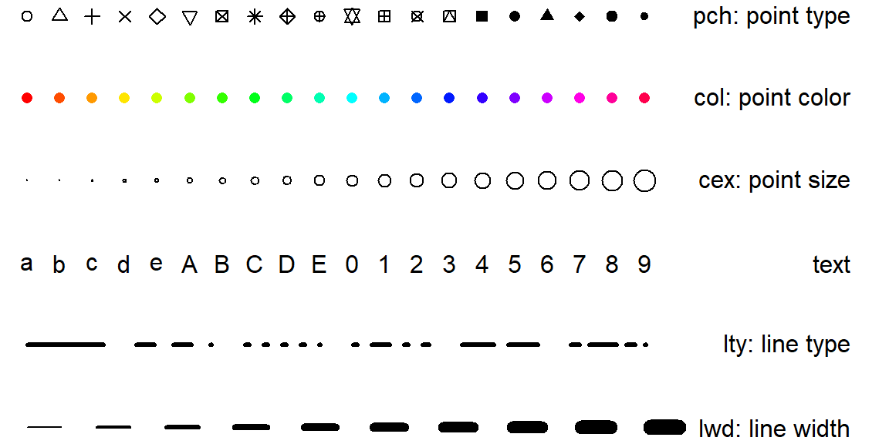

Lab 1: An introduction to R for ecological modeling
1 Learning outcomes
The aim of this tutorial is to learn the basics of R. After completing the tutorial you will be able to:
Install
Rand associated packages and RstudioDo interactive calculations in the
RconsoleConsult the built-in help in
RCreate, modify and run
RscriptsSetup a typical workflow in
R(loading libraries, reading data, doing statistics and saving results)Work with the most common data types in
R(vectors, matrices, lists and data frames)
2 R for beginners
2.1 How to use this tutorial
This tutorial contains many sample calculations. It is important to do these yourself—type them in at your keyboard and see what happens on your screen—to get the feel of working in
R.Exercises in the middle of a section should be done inmediately, and make sure you have them rightly solved before moving on. Some other, more challenging, exercises appear at the end of some sections, and these can be left until later.
2.2 What is R?
R is an object-oriented scripting language that
can be used for numerical simulation of deterministic and stochastic dynamic models.
has an extensive set of functions for classical and modern statistical data analysis and modeling.
has graphics functions for visualizing data and model output
a user interface with a few basic menus and extensive help facilities
R is an open source project, available for free download via the Web. Originally a research project in statistical computing it is now managed by a development team that includes a number of well-regarded statisticians. It is widely used by statistical researchers and a growing number of theoretical ecologists and ecological modelers as a platform for making new methods available to users.
2.3 Installing R on your computer: basics
If R is already installed on your computer, you can skip this section.
The main source for R is the CRAN home page http://cran.r-project.org. You can get the source code, but most users will prefer a precompiled version. To get one of these from CRAN:
go to
http://cran.r-project.org/mirrors.htmland find a mirror site that is geographically somewhat near you.Find the appropriate page for your operating system — when you get to the download section, go to
baserather thancontrib. Download the binary file (e.g.base/R-x.y.z-win32.exefor Windows,R-x.y.z.dmgfor MacOS, wherex.y.zis the version number). The binary files are large (30–60 megabytes) — you will need to find a fast internet connection.Read and follow the instructions (which are pretty much “click on the icon”).
2.4 Installing and using Rstudio
Nowadays programs are available that integrate R in a sophisticated way by combining a console, a syntax highlighting editor (giving colors to R commands and allowing you to identify missing parentheses, quotation marks etc.), tools for plotting, debugging, workspace management and connections to versioning systems into one program. Rstudio is currently the most advanced wrapper around R and is highly recommended if R is the core of your work. Rstudio can be found and downloaded at https://www.rstudio.com.
If a new R version is launched after you installed Rstudio, you can change the R version that is used in Rstudio by clicking on Tools and Global Options, choose R general and select the location of the most recent R version.
Rstudio usually displays four panels. The default setting is a script editor at the top-left of the screen, the console at the bottom-left, the global environment (which shows what is stored in the memory) at the top-right, and a plotting region at bottom-right. As you see some panel have multiple tabs that include other useful features such as the help (bottom-right), the (available and loaded) packages (bottom-right) etc.
2.5 The R package system
The standard distributions of R include several packages, user-contributed suites of add-on functions. This lab uses some packages that are not part of the standard distribution. In general, you can install additional packages from within R using the Packages menu, or the install.packages command.
You may be able to install new packages from a menu within R. Type and it will install the package ggplot2 that you will use in the next tutorial.
install.packages("ggplot2")(for example — this installs the ggplot2 package). You can install more than one package at a time:
install.packages(c("ggplot2","nlme"))(c stands for “combine”, and is the command for combining multiple things into a single object.)
Some of the important functions and packages (collections of functions) for statistical modeling and data analysis are summarized in Table 2. Venables and Ripley (2002) give a good practical (although somewhat advanced) overview, and you can find a list of available packages and their contents at CRAN, the main R website (http://www.cran.r-project.org — select a mirror site near you and click on Package sources). For the most part, we will not be concerned here with this side of R.
2.6 Interactive calculations in the console
The console is where you enter commands for R to execute interactively, meaning that the command is executed and the result is displayed as soon as you hit the Enter key (bottom-left panel in Rstudio). For example, at the command prompt >, type in 2+2 and hit Enter
2 + 2To do anything complicated, you have to store the results from calculations by assigning them to variables, using = or <-. For example:
a = 2+2R automatically creates the variable a and stores the result (4) in it, but it doesn’t print anything. This may seem strange, but you’ll often be creating and manipulating huge sets of data that would fill many screens, so the default is to skip printing the results. To ask R to print the value, just type the variable name by itself at the command prompt:
a(the [1] at the beginning of the line is just R printing an index of element numbers; if you print a result that displays on multiple lines, R will put an index at the beginning of each line. print(a) also works to print the value of a variable.) By default, a variable created this way is a vector, and it is numeric because we gave R a number rather than some other type of data (e.g. a character string like "pxqr"). In this case a is a numeric vector of length 1, which acts just like a number.
You could also type a=2+2; a, using a semicolon to put two or more commands on a single line. Conversely, you can break lines anywhere that R can tell you haven’t finished your command and R will give you a “continuation” prompt (+) to let you know that it doesn’t think you’re finished yet: try typing
a = 3*(4 + [Enter]
5)to see what happens. You will sometimes see the continuation prompt when you don’t expect it, e.g. if you forget to close parentheses.If you get stuck continuing a command you don’t want—e.g. you opened the wrong parentheses—just hit the Escape key or the stop icon in the menu bar to get out.
Variable names in R must begin with a letter, followed by letters or numbers. You can break up long names with a period, as in very.long.variable.number.3, or an underscore (_), but you can’t use blank spaces in variable names (or at least it’s not worth the trouble). Variable names in R are case sensitive, so Abc and abc are different variables. Make variable names long enough to remember, short enough to type.N.per.ha or pop.density are better than x and y (too short) or available.nitrogen.per.hectare (too long). Avoid c, l, q, t, C, D, F, I, and T, which are either built-in R functions or hard to tell apart.
R does calculations with variables as if they were numbers. It uses +, -, *, /, and ^ for addition, subtraction, multiplication, division and exponentiation, respectively. For example:
x = 5
y = 2
z1 = x*y ## no output
z2 = x/y ## no output
z3 = x^y ## no output
z2
z3Even though R did not display the values of x and y, it “remembers” that it assigned values to them. Type x; y to display the values.
You can retrieve and edit previous commands. The up-arrow (\(\uparrow\)) in the console recalls previous commands to the prompt. They also can be found in the top-right tab History. For example, you can bring back the second-to-last command and edit it into
z3 = 2*x^yYou can combine several operations in one calculation:
A = 3
C = (A+2*sqrt(A))/(A+5*sqrt(A))
CParentheses specify the order of operations. The command
C = A + 2*sqrt(A)/A + 5*sqrt(A)is not the same as the one above; rather, it is equivalent to C=A + 2*(sqrt(A)/A) + 5*sqrt(A).
The default order of operations is: (1) parentheses; (2) exponentiation, or powers, (3) multiplication and division, (4) addition and subtraction.
b = 12-4/2^3 gives 12 - 4/8 = 12 - 0.5 = 11.5
b = (12-4)/2^3 gives 8/8 = 1
b = -1^2 gives -(1^2) = -1
b = (-1)^2 gives 1
In complicated expressions you might start off by using parentheses to specify explicitly what you want, such as b = 12 - (4/(2^3)) or at least b = 12 - 4/(2^3); a few extra sets of parentheses never hurt, although when you get confused it’s better to think through the order of operations rather than flailing around adding parentheses at random. R also has many built-in mathematical functions that operate on variables (Table 1 shows a few).
Exercise
Using editing shortcuts wherever you can, have R compute the values of:
\(\frac{2^7}{2^7 - 1}\) and compare it with \(\left({1 - \frac{1}{2^7}}\right)^{-1}\)
- \(1 + 0.2\)
- \(1 + 0.2 + 0.2^2/2 + \cos(2.3)\)
- \(\log(1)\)
- \(\exp(0.2)\)
The standard normal probability density, \(\frac{1}{\sqrt(2\pi)}\exp(-x^2/2)\), for values of \(x=1\) and \(x=2\) (
Rknows \(\pi\) aspi). You can check your answers against the built-in function for the normal distribution;dnorm(1)anddnorm(2)should give you the values for the standard normal for \(x=1\) and \(x=2\).
2.7 The help system
R has a help system, although it is generally better for providing detail or reminding you how to do things than for basic ``how do I …?’’ questions.
- You can get help on any R function by entering
?fooWhere foo is the name of the function you are interested in (e.g., try ?sin).
??topicorhelp.search("topic")(with quotes) will list information related totopicavailable in the base system or in any extra installed packages: then use?topicto see the information, perhaps usinglibrary(pkg)to load the appropriate package first.help.searchuses “fuzzy matching” — for example,help.search("log")finds 528 entries (on my particular system) including lots of functions with “plot”, which includes the letters “lot”, which are almost like “log”. If you can’t stand it, you can turn this behavior off by specifying the incantationhelp.search("log",agrep=FALSE)(81 results which still include matches for “logistic”, “myelogenous”, and “phylogeny” …)On-line help resources - just google it. In our experience, the help provided by
Rrequires some experience in theRlanguage to be able to understand it. Therefore, a general, but practical advice is to google your problem. In 99.9% of the cases someone else had a similar question in the past which were solved by theRcommunity. Start you search string with “R-help” helps to filter relevant webpages. Place were you likely will find answers are https://stackoverflow.com or https://stat.ethz.ch.
3 Scripts and Reading Data
3.1 Using scripts and data files
Modeling and complicated data analysis are often much easier if you use scripts, which are a series of commands stored in a text file. Scripting has a number of advantages and should be standard practice when doing statstics for reasons of transparency (you can see what you have done), repeatability (tomorrow you will get the same result as today) and transferability (a colleague can easily check what you have done and redo your analysis). Even for relatively simple tasks, script files are useful for building up a calculation step-by-step, making sure that each part works before adding on to it. We recommend you making a habit typing all commands in a script editor before sending it the console, otherwise important parts of your analysis may get lost because you did not store them.
Rstudio has an advanced script editor that recognizes R syntax by giving different colors to different R commands and by automatic completion of parentheses. You can also use Windows Notepad or Wordpad but you should not use MS Word.
Most programs for working with models or analyzing data follow a simple pattern of program parts:
“Setup” statements. For example, load some packages, or run another script file that creates some functions (more on functions later).
Input some data from a file or the keyboard. For example, read in data from a text file.
Carry out the calculations that you want. For example, fit several statistical models to the data and compare them.
Print the results, graph them, or save them to a file. For example, graph the results, and save the graph to disk for including in your term project.
To tell R where data and script files are located, you can do any one of the following:
spell out the path, or file location, explicitly. (Use a single forward slash to separate folders (e.g.
"c:/My Documents/R/script.R"): this works on all platforms.)change your working directory to wherever the file(s) are located using the
setwd(set working directory) function, e.g.setwd("c:/temp")or through clicking on ‘Session’ and ‘set working directory’. Changing your working directory is more efficient in the long run, if you save all the script and data files for a particular project in the same directory and switch to that directory when you start work.
3.2 Typical workflow in R: an example using linear regression
To get a feel for a typical workflow in R we’ll fit a straight-line model (linear regression) to data.
Start a blank R script (File -> New File -> R script) and save it on a convenient location.
Below are some data on the maximum growth rate \(r_{max}\) of laboratory populations of the green alga Chlorella vulgaris as a function of light intensity (\(\mu\)E per m\(^2\) per second). These experiments were run during the system-design phase of the study reported by Fussman et al. (2000).
Light: 20, 20, 20, 20, 21, 24, 44, 60, 90, 94, 101
\(r_{max}\): 1.73, 1.65, 2.02, 1.89, 2.61, 1.36, 2.37, 2.08, 2.69, 2.32, 3.67
To analyze these data in R, first enter them as numerical vectors in your script and send them to the console:
Light = c(20,20,20,20,21,24,44,60,90,94,101)
rmax = c(1.73,1.65,2.02,1.89,2.61,1.36,2.37,2.08,2.69,2.32,3.67)The function c combines the individual numbers into a vector. Try recalling (with \(\uparrow\)) and modifying the above command to
Light=20,20,20,20,21,24,44,60,90,94,101and see the error message you get: in order to create a vector of specified numbers, you must use the c function. Don’t be afraid of error messages: the answer to “what would happen if I …?” is usually “try it and see!”
To see a histogram of the growth rates enter hist(rmax), which opens a graphics window and displays the histogram. There are many other built-in statistics functions: for example mean(rmax) computes you the mean, and sd(rmax) and var(rmax) compute the standard deviation and variance, respectively. Play around with these functions, and any others you can think of.
To see how light intensity affects algal rate of increase, type
plot(rmax ~ Light)in the script (and send it the console) to plot rmax (\(y\)) against Light (\(x\)). The ~ sign implies “as a function of”. Alternatively, type plot(Light,rmax). A linear regression would seem like a reasonable model for these data. We’ll soon be adding to it.
R’s default plotting character is an open circle. Open symbols are generally better than closed symbols for plotting because it is easier to see where they overlap, but you could include pch=16 in the plot command if you wanted closed circles instead. Figure 1 shows several more ways to adjust the appearance of lines and points in R.
To perform linear regression we create a linear model using the lm (linear model) function:
fit = lm(rmax~Light)(Note that linear model is read as “model \(r_{max}\) as a function of light”.)
The lm command produces no output at all, but it creates fit as an object, i.e. a data structure consisting of multiple parts, holding the results of a regression analysis with rmax being modeled as a function of Light. Unlike most statistics packages, R rarely produces automatic summary output from an analysis. Statistical analyses in R are done by creating a model, and then giving additional commands to extract desired information about the model or display results graphically.
To get a summary of the results, enter the command summary(fit). R sets up model objects (more on this later) so that the function summary “knows” that fit was created by lm, and produces an appropriate summary of results for an lm object:
summary(fit)[If you’ve had (and remember) a statistics course the output will make sense to you. The table of coefficients gives the estimated regression line as \(r_{max} = 1.581 + 0.014 \times Light\), and associated with each coefficient is the standard error of the estimate, the \(t\)-statistic value for testing whether the coefficient is nonzero, and the \(p\)-value corresponding to the \(t\)-statistic. Below the table, the adjusted R-squared gives the estimated fraction of the variance explained by the regression line, and the \(p\)-value in the last line is an overall test for significance of the model against the null hypothesis that the response variable is independent of the predictors.]
You can add the regression line to the plot of the data with a function taking fit as its input (if you closed the plot of the data, you will need to create it again in order to add the regression line):
abline(fit)(abline, pronounced “a b line”, is a general-purpose function for adding lines to a plot: you can specify horizontal or vertical lines, a slope and an intercept, or a regression model: ?abline).
You can get the coefficients by using the coef function:
coef(fit)You can also “interrogate” fit directly. Type names(fit) to get a list of the components of fit, and then use the $ symbol to extract components according to their names.
names(fit)For more information (perhaps more than you want) about fit, use str(fit) (for structure). You can get the regression coefficients this way:
fit$coefficientsIt’s good to be able to look inside R objects when necessary, but all other things being equal you should prefer (e.g.) coef(x) to x$coefficients.
Usually data is loaded from a file. To illustrate this, grab Intro2.R and ChlorellaGrowth.txt from brighspace to see how this is done. In ChlorellaGrowth.txt the two variables are entered as columns of a data matrix. Then instead of typing these in by hand, the command
X = read.table("ChlorellaGrowth.txt",header=TRUE)reads the file (from the current directory) and puts the data values into the variable X; header=TRUE specifies that the file includes column names. Note that as specified above you need to make sure that R is looking for the data file in the right place … either move the data file to your current working directory, or change the line so that it points to the actual location of the data file.
Extract the variables from X with the commands
Light = X[,1]
rmax = X[,2]Think of these as shorthand for “Light = everything in column 1 of X”, and “rmax = everything in column 2 of X” (we’ll learn about working with data matrices later). From there on out it’s the same as before, with some additions that set the axis labels and add a title.
Exercise
Make a copy of Intro2.R under a new name, and modify the copy so that it does linear regression of algal growth rate on the natural log of light intensity, LogLight=log(Light), and plots the data appropriately.
Exercise
Run Intro2.R, then enter the command plot(fit) in the console and follow the directions in the console. Figure out what just happened.
R produced a series of diagnostic plots exploring whether or not the fitted linear model is a suitable fit to the data. In each of the plots, the 3 most extreme points (the most likely candidates for “outliers”) have been identified according to their sequence in the data set.
The axes in plots are scaled automatically, but the outcome is not always ideal (e.g. if you want several graphs with exactly the same axis limits). You can use the xlim and ylim arguments in plot to control the limits: plot(x,y,xlim=c(x1,x2), [other stuff])
will draw the graph with the \(x\)-axis running from x1 to x2, and using ylim=c(y1,y2) within the plot command will do the same for the \(y\)-axis.
Exercise
Create a plot of growth rate versus light intensity with the \(x\)-axis running from 0 to 120 and the \(y\)-axis running from 1 to 4.
You can place several graphs within a single figure by using the par function (short for “parameter”) to adjust the layout of the plot. For example, the command
par(mfrow=c(2,3))divides the plotting area into 2 rows and 3 columns. As R draws a series of graphs, it places them along the top row from left to right, then along the next row, and so on. mfcol=c(2,3) has the same effect except that R draws successive graphs down the first column, then down the second column, and so on.
Exercise
Modify the script as follows. Use mfcol=c(2,1) to create graphs of growth rate as a function of Light, and of log(growth rate) as a function of log(Light) in the same figure. Do the same again, using mfcol=c(1,2).
Exercise
Use ?plot and ?par to read about other plot control parameters. The function plot takes a number of arguments such as type that allows you to draw a line through a series of points instead of plotting separate points. With par you can change anything you want to change. For example, you can choose the coloor of the points, or the shape of the points. You should definitely skim read this help as this is one of the longest help files in the whole R system!).
Then draw a \(2 \times 2\) set of plots, each showing the line \(y=5x + 3\) with \(x\) running from 3 to 8, but with 4 different line styles and 4 different line colors.
Exercise
Modify one of your scripts so that at the very end it saves the plot to disk. In Windows you can do this with specific functions like jpeg or png. Use ?jpeg or ?png to read about these functions. Note that the argument filename can include the path to a folder; for example, in Windows you can use filename="c:/temp/Intro2Figure.png".
Exercise
Do some online research to figure out:
- How to rotate the y-axis labels
- How to change the background of the plot to grey
4 Data types
R distinguishes a number of data types including vectors, matrices, data frames and lists that each have special properties and which are used for calculations and data storage.
4.1 Vectors
An important class of data types are vectors and matrices (1- and 2-dimensional rectangular arrays of numbers). Operations with vectors and matrices may seem a bit abstract now, but we need them to do useful things later. The only properties of vectors are their type (or class) and length, although they can also have an associated list of names.
We’ve already seen two ways to create vectors in R:
- A command in the console window or a script file listing the values, such as
initialsize=c(1,3,5,7,9,11)- Using
read.table:
initialsize=read.table("c:/temp/initialdata.txt")(assuming of course that the file exists in the right place).
You can then use a vector in calculations as if it were a number (more or less)
finalsize=initialsize+1
finalsize
newsize=sqrt(initialsize)
newsizeNotice that R applied each operation to every element in the vector. Similarly, commands like initialsize-5, 2*initialsize, initialsize/10 apply subtraction, multiplication, and division to each element of the vector. The same is true for
initialsize^2In R the default is to apply functions and operations to vectors in an element by element (or “vectorized”) manner. This is an extremely useful propery in R.
4.1.1 Functions for creating vectors
You can use the seq function to create a set of regularly spaced values. seq’s syntax is x=seq(from,to,by) or x=seq(from,to) or x=seq(from,to,length.out). The first form generates a vector starting with from with the last entry not extending further than than to in steps of by. In the second form the value of by is assumed to be 1 or -1, depending on whether from or to is larger. The third form creates a vector with the desired endpoints and length. The syntax from:to is a shortcut for seq(from,to):
1:8
Exercise
Use seq to create the vector v=(1 5 9 13), and to create a vector going from 1 to 5 in increments of 0.2.
You can use rep to create a constant vector such as (1 1 1 1); the basic syntax is rep(values,lengths). For example,
rep(3,5)creates a vector in which the value 3 is repeated 5 times. rep will repeat a whole vector multiple times
rep(1:3,3)or will repeat each of the elements in a vector a given number of times:
rep(1:3,each=3)Even more flexibly, you can repeat each element in the vector a different number of times:
rep( c(3,4),c(2,5) )[1] 3 3 4 4 4 4 4The value 3 was repeated 2 times, followed by the value 4 repeated 5 times. rep can be a little bit mind-blowing as you get started, but it will turn out to be useful.
Table 3 lists some of the main functions for creating and working with vectors.
4.1.2 Vector indexing
You will often want to extract a specific entry or other part of a vector. This procedure is called vector indexing, and uses square brackets ([]):
z = c(1,3,5,7,9,11)
z[3]z[3] extracts the third item, or element, in the vector z. You can also access a block of elements using the functions for vector construction, e.g.
z[2:5]extracts the second through fifth elements.
What happens if you enter v=z[seq(1,5,2)] ? Try it and see, and make sure you understand what happened.
You can extracted irregularly spaced elements of a vector. For example
z[c(1,2,5)]You can also use indexing to set specific values within a vector. For example,
z[1]=12changes the value of the first entry in z while leaving all the rest alone, and
z[c(1,3,5)]=c(22,33,44)changes the first, third, and fifth values (note that we had to use c to create the vector — can you interpret the error message you get if you try z[1,3,5] ?)
Exercise
Write a one-line command to extract a vector consisting of the second, first, and third elements of z in that order.
Exercise
Write a script file that computes values of \(y=\frac{(x-1)}{(x+1)}\) for \(x=1,2,\cdots,10\), and plots \(y\) versus \(x\) with the points plotted and connected by a line hint: in ?plot, search for type.
Exercise
The sum of the geometric series \(1 + r + r^2 + r^3 + ... + r^n\) approaches the limit \(1/(1-r)\) for \(r < 1\) as \(n \rightarrow \infty\).
Set the values \(r=0.5\) and \(n=10\), and then write a one-line command that creates the vector \(G = (r^0,r^1,r^2,...,r^n)\). Compare the sum (using sum) of this vector to the limiting value \(1/(1-r)\).
Repeat for \(n=50\). (Note that comparing very similar numeric values can be tricky: rounding can happen, and some numbers cannot be represented exactly in binary (computer) notation. By default R displays 7~significant digits (options("digits")).
For example:
x = 1.999999
x
x-2
x=1.9999999999999
x
x-2All the digits are still there, in the second case, but they are not shown. Also note that x-2 is not exactly \(-1 \times 10^{-13}\); this is unavoidable.)
4.1.3 Logical operators
Logical operators return a value of TRUE or FALSE. For example, try:
a=1
b=3
d=a<b
e=(a>b)
d
eThe parentheses around (a>b) are optional but make the code easier to read. One special case where you do need parentheses (or spaces) is when you make comparisons with negative values; a<-1 will surprise you by setting a=1, because <- (representing a left-pointing arrow) is equivalent to = in R. Use a< -1, or more safely a<(-1), to make this comparison.
When we compare two vectors or matrices of the same size, or compare a number with a vector or matrix, comparisons are done element-by-element. For example,
x = 1:5
b=(x<=3)So if x and y are vectors, then (x==y) will return a vector of values giving the element-by-element comparisons. If you want to know whether x and y are identical vectors, use identical(x,y) which returns a single value: TRUE if each entry in x equals the corresponding entry in y, otherwise FALSE. You can use ?Logical to read more about logical operators. Note the difference between = and ==
Exercise
Run the code block below. Can you figure out why a==b gives different results the first and second time you execute them?
a = 1:3
b = 2:4
a==b
a=b
a==bExclamation marks ! are used in R to mean “not”; != (not ==) means “not equal to”.
R also does arithmetic on logical values, treating TRUE as 1 and FALSE as 0. So sum(b) returns the value 3, telling us that three entries of x satisfied the condition (x<=3). This is useful for (e.g.) seeing how many of the elements of a vector are larger than a cutoff value. Build more complicated conditions by using logical operators to combine comparisons:
!: Negation&,&&: AND|,||: OR
OR is non-exclusive, meaning that x|y is true if either x or y or both are true (a ham-and-cheese sandwich would satisfy the condition “ham OR cheese”). For example, try
a = c(1,2,3,4)
b = c(1,1,5,5)
(a < b) & (a > 3)
(a < b) | (a > 3)and make sure you understand what happened. If it’s confusing, try breaking up the expression and looking at the results of a<b and a>3 separately first. The two forms of AND and OR differ in how they handle vectors. The shorter one does element-by-element comparisons; the longer one only looks at the first element in each vector.
We can also use logical vectors (lists of TRUE and FALSE values) to pick elements out of vectors. This is important, e.g., for subsetting data (getting rid of those pesky outliers!)
As a simple example, we might want to focus on just the low-light values of \(r_{max}\) in the Chlorella example:
X=read.table("ChlorellaGrowth.txt",header=TRUE)
Light=X[,1]
rmax=X[,2]
lowLight = Light[Light<50]
lowLightrmax = rmax[Light<50]
lowLight
lowLightrmaxWhat is really happening here (think about it for a minute) is that Light<50 generates a logical vector the same length as Light (TRUE TRUE TRUE ...) which is then used to select the appropriate values.
If you want the positions at which Light is lower than 50, you could say (1:length(Light))[Light<50], but you can also use a built-in function: which(Light<50). If you wanted the position at which the maximum value of Light occurs, you could say which(Light==max(Light)). (This normally results in a vector of length 1; when could it give a longer vector?) There is even a built-in command for this specific function, which.max (although which.max always returns just the first position at which the maximum occurs).
Exercise
What would happen if instead of setting lowLight you replaced Light by saying Light=Light[Light<50], and then rmax=rmax[Light<50]?
Why would that be wrong?
Try it with some temporary variables — set Light2=Light and rmax2=rmax and then play with Light2 and rmax2 so you dont mess up your working variables — and work out what happened…
We can also combine logical operators (making sure to use the element-by-element & and | versions of AND and OR):
Exercise
runif(n) is a function (more on it soon) that generates a vector of n random, uniformly distributed numbers between 0 and 1. Create a vector of 20 numbers, then select the subset of those numbers that is less than the mean. (If you want your answers to match mine exactly, use set.seed(273) to set the random-number generator to a particular starting point before you use runif. [273 is an arbitrary number I chose].)
Exercise
Find the positions of the elements that are less than the mean of the vector you just created (e.g. if your vector were (0.1 0.9. 0.7 0.3) the answer would be (1 4)).
As I mentioned in passing above, vectors can have names associated with their elements: if they do, you can also extract elements by name (use names to find out the names).
x = c(first=7,second=5,third=2)
names(x)
x["first"]
x[c("third","first")]Finally, it is sometimes handy to be able to drop a particular set of elements, rather than taking a particular set: you can do this with negative indices. For example, x[-1] extracts all but the first element of a vector.
Exercise
Specify two ways to take only the elements in the odd positions (first, third, …) of a vector of arbitrary length.
4.2 Matrices
4.2.1 Creating matrices
A matrix is a two-dimensional array, and has the same kind of variables in every column. You can create matrices of numbers by creating a vector of the matrix entries, and then reshaping them to the desired number of rows and columns using the function matrix. For example
(X = matrix(1:6,nrow=2,ncol=3))takes the values 1 to 6 and reshapes them into a 2 by 3 matrix.
By default R loads the values into the matrix column-wise (this is probably counter-intuitive since we’re used to reading tables row-wise). Use the optional parameter byrow to change this behavior. For example:
(A = matrix(1:9,nrow=3,ncol=3,byrow=TRUE))R will re-cycle through entries in the data vector, if necessary to fill a matrix of the specified size. So for example
matrix(1,nrow=10,ncol=10)creates a \(10 \times 10\) matrix of ones.
Exercise
Use a command of the form X = matrix(v,nrow=2,ncol=4) where v is a data vector, to create the following matrix X:
[,1] [,2] [,3] [,4]
[1,] 1 1 1 1
[2,] 2 2 2 2If you can, try to use R commands to construct the vector rather than typing out all of the individual values.
R will also collapse a matrix to behave like a vector whenever it makes sense: for example sum(X) above is 12.
Exercise
Use rnorm (which is like runif, but generates Gaussian (normally distributed) numbers with a specified mean and standard deviation instead) and matrix to create a \(5 \times 7\) matrix of Gaussian random numbers with mean 1 and standard deviation 2. (Use set.seed(273) again for consistency).
Another useful function for creating matrices is diag. diag(v,n) creates an \(n \times n\) matrix with data vector \(v\) on its diagonal. So for example diag(1,5) creates the \(5 \times 5\) identity matrix, which has 1’s on the diagonal and 0 everywhere else. Try diag(1:5,5) and diag(1:2,5); Observe what is happening. Is this desired behaviour?
Finally, you can use the data.entry function. This function can only edit existing matrices, but for example
A=matrix(0,nrow=3,ncol=4)
data.entry(A)will create A as a \(3 \times 4\) matrix, and then call up a spreadsheet-like interface in which you can change the values to whatever you need.
4.2.2 cbind and rbind
If their sizes match, you can combine vectors to form matrices, and stick matrices together with vectors or other matrices. cbind (“column bind”) and rbind (“row bind”) are the functions to use.
cbind binds together columns of two objects. One thing it can do is put vectors together to form a matrix:
(C = cbind(1:3,4:6,5:7))R interprets vectors as row or column vectors according to what you’re doing with them. Here it treats them as column vectors so that columns exist to be bound together. On the other hand,
(D = rbind(1:3,4:6))treats them as rows. Now we have two matrices that can be combined.
Exercise
Verify that rbind(C,D) works, cbind(C,C) works, but cbind(C,D) doesn’t. Why not?
4.2.3 Matrix indexing
Matrix indexing is like vector indexing except that you have to specify both the row and column, or range of rows and columns. For example z=A[2,3] sets z equal to 6, which is the (2nd row, 3rd column) entry of the matrix A that you recently created, and
A[2,2:3]
(B=A[2:3,1:2])There is an easy shortcut to extract entire rows or columns: leave out the limits, leaving a blank before or after the comma.
(first.row=A[1,])
(second.column=A[,2])(What does A[,] do?)
As with vectors, indexing also works in reverse for assigning values to matrix entries. For example,
(A[1,1]=12)You can do the same with blocks, rows, or columns, for example
(A[1,]=c(2,4,5))If you use which on a matrix, R will normally treat the matrix as a vector — so for example which(A==8) will give the answer 6 (figure out why). However, which does have an option that will treat its argument as a matrix:
which(A==8,arr.ind=TRUE)4.3 Lists
While vectors and matrices may seem familiar, lists are probably new to you. Vectors and matrices have to contain elements that are all the same type: lists in R can contain anything — vectors, matrices, other lists… Indexing lists is a little different too: use double square brackets [[ ]] (rather than single square brackets as for a vector) to extract an element of a list by number or name, or $ to extract an element by name (only). Given a list like this:
L = list(A=x,B=y,C=c("a","b","c"))Then L$A, L[["A"]], and L[[1]] will all grab the first element of the list.
You won’t use lists too much at the beginning, but many of R’s own results are structured in the form of lists.
4.4 Data frames
Data frames are the solution to the problem that most data sets have several different kinds of variables observed for each sample (e.g. categorical site location and continuous rainfall), but matrices can only contain a single type of data. Data frames are a hybrid of lists and vectors; internally, they are a list of vectors that may be of different types but must all be the same length, but you can do most of the same things with them (e.g., extracting a subset of rows) that you can do with matrices. You can index them either the way you would index a list, using [[ ]] or $ — where each variable is a different item in the list — or the way you would index a matrix. Use as.matrix if you have a data frame (where all variables are the same type) that you really want to be a matrix, e.g. if you need to transpose it (use as.data.frame to go the other way).
5 References & Acknowlegdements
These notes are based in part on course materials by former TAs Colleen Webb, Jonathan Rowell and Daniel Fink at Cornell, Professors Lou Gross (University of Tennessee) and Paul Fackler (NC State University), and on the book Getting Started with Matlab by Rudra Pratap (Oxford University Press). They also draw on the documentation supplied with R. They parallel, but go into more depth than, the chapter supplement for the book Ecological Models and Data in R.
You can find many other similar introductions scattered around the web, or in the “contributed documentation” section on the R web site (http://cran.r-project.org/other-docs.html). This particular version is limited (it has similar coverage to Sections 1 and 2 of the Introduction to R that comes with R) and targets biologists who are neither programmers nor statisticians.
Fussmann, G., S. P. Ellner, K. W. Shertzer and J. N. G. Hairston. 2000. Crossing the Hopf bifurcation in a live predator-prey system. Science 290:1358-1360.
Ihaka, R. and R. Gentleman. 1996. R: A language for data analysis and graphics. Journal of Computational and Graphical Statistics 5:299-314.
Venables and Ripley. 2002. Modern Applied Statistics with S. Springer, New York. 4th edition.